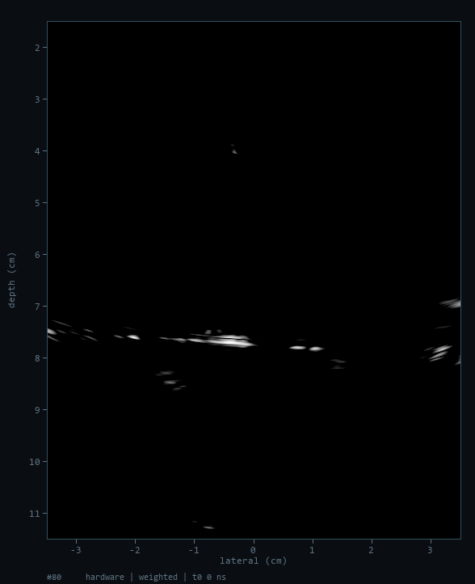
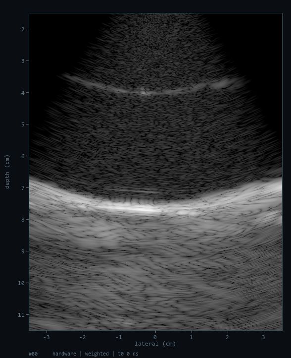
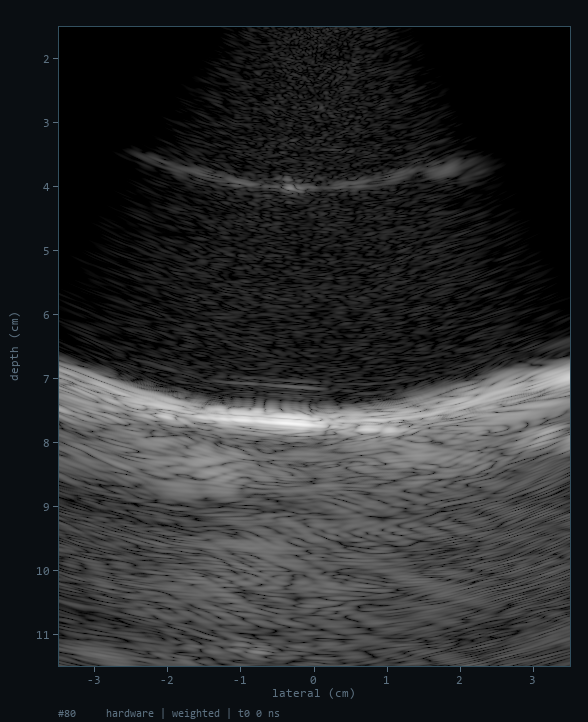
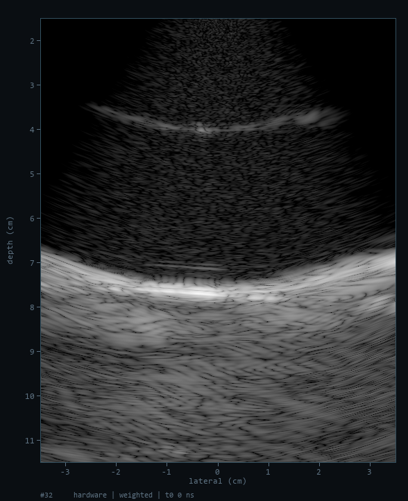
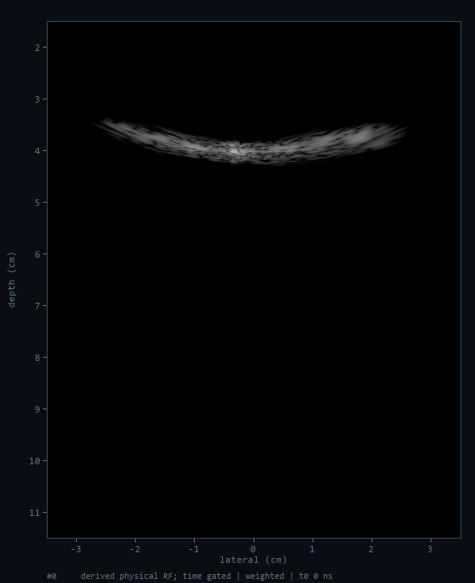
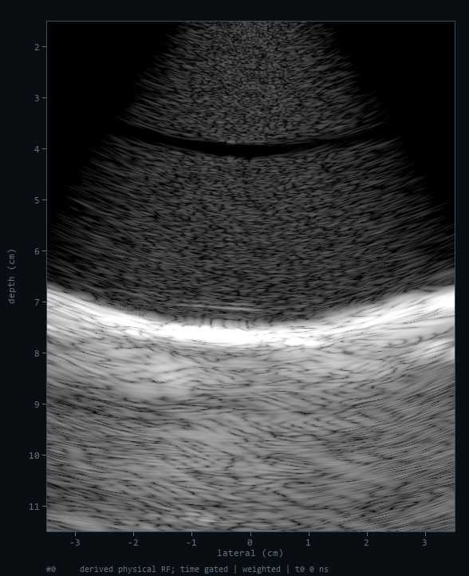

9 physical captures · 768 complete sweeps · 74 reconstructions. The FPGA runtime identity was verified before every capture. Selected gain1800 stayed unclipped in all320 sweeps tested at that gain. Gain2000 clipped7channels and was rejected.
The selected profile preserves gray and avoids a solid-white bottom band. It exposes more noise and clutter than the wire preset. This bath supplied no independently verified bubble target; it does not establish tissue performance.

Settings
Settings
SettingsAll panels come from frame80 of the same final physical recording. Wire: CF2,4sweeps,45dB/+40dB,Hann. Reference: CF0,1sweep,95dB/+15dB,75%taper. Gentle: CF0.05,2sweeps,95dB/+15dB,75%taper. These are different intended uses, not a claim that the cleanest background is best.
Both images below use exactly identical linear magnitude. Lowering gain while widening the display window preserves the same -110dB black threshold and recovers highlight gradation.

A diagnostic derivative retaining only the predicted wire-echo time window reproduces most of both side spots. Removing that window largely removes them. This is strong evidence for wire-related sidelobes; neither derived file is used for the final profile.


| Capture/RF | TGC | Sweeps | Complete | ADC peak | Selection check |
|---|---|---|---|---|---|
| baseline-1600 | 1600 | 64 | 64 | 1210 | No clipping |
| gain-1200 | 1200 | 64 | 64 | 649 | No clipping |
| gain-1400 | 1400 | 64 | 64 | 894 | No clipping |
| gain-1600 | 1600 | 64 | 64 | 1221 | No clipping |
| gain-1800 | 1800 | 64 | 64 | 1578 | No clipping |
| gain-2000 | 2000 | 64 | 64 | 2048 | Rejected: clipping on [32, 33, 34, 40, 44, 45, 47] |
| validation-1600 | 1600 | 128 | 128 | 1224 | No clipping |
| validation-1800-a | 1800 | 128 | 128 | 1592 | No clipping |
| validation-1800-b | 1800 | 128 | 128 | 1581 | No clipping |
All results and trial definitions · RF checks and hashes · Interpretation and final presets